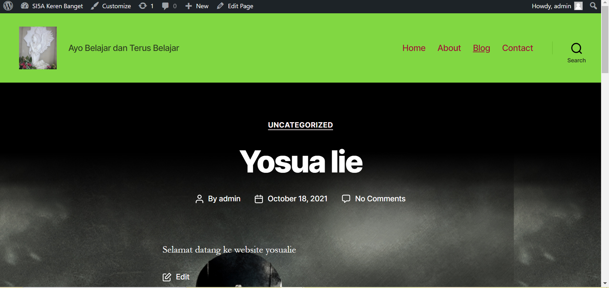
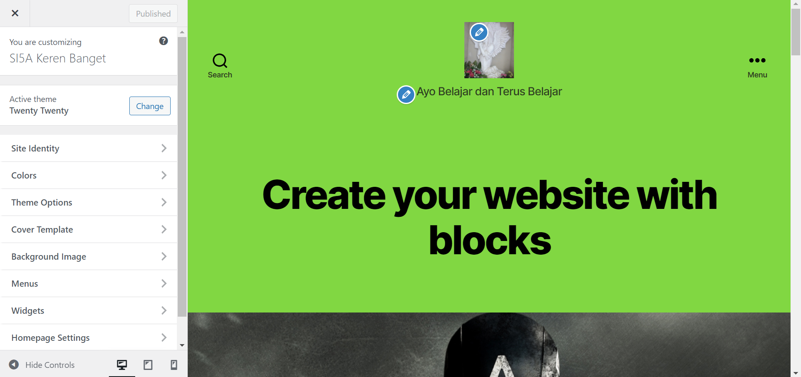

NIM: 1922500007
Nama:Yosua
Kelompok: SI5A
Kesimpulan atau hasil pertemuan 2 yang saya ambil adalah:
- Di dalam htdocs, mesti ada folder si5a2122o, sehingga pada browser bisa diakses dengan http://localhost/si5a2122o
- jika object not found (404), maka cek dulu nama folder antara htdocs dengan yang diketik di localhost
- jika ada tulisan error establishing database connection, cek dulu apakah mysql sudah running pada xampp control panel
- jika sudah running, buka wp-config.php pada folder si5a2122o, dan cek db_name. db name ini pastikan ada di phpmyadmin
- jika pada phpmyadmin belum ada nama databasenya, maka import dulu file sql bahan pertemuan ke 2 (hasil pertemuan ke 1)
- wordpress memiliki 2 sisi, 1 tampilan backend (untuk admin/dashboard) dan 1 nya lagi tampilan front end (untuk pengunjung/client area)
- untuk backend, harus login dulu di alamat http://localhost/si5a2122o/wp-admin
Berikut tampilan halaman web setelah di restore:

Berikut tampilan front end:
Berikut tampilan back end:

- Cara mengubah profil dan password,klik menu pengguna pilih profil kemudian ubah nama pada kolom nama jika ingin mengubah password klik menu atur kata sandi dan isi kata sandi baru dan setelah itu klik perbarui,maka nama pengguna dan password berhasil diubah.
- Cara daftar user baru dengan klik menu pengguna pilih tambah baru pengguna kemudian isi nama penggunanya(tidak mengandung spasi),email,nama depan,nama belakang dan isilah nama situs web,setelah itu pilih lah peranannya yang terdiri dari pelanggan(kemampuannya hanya bisa mengupdate profil dan mengubah password dan mengatur komentar),Kontributor(kemampuannya bisa melihat komen ,menu peralatan dan melihat semua pos tetapi tidak bisa mengubahnya serta bisa menambah konten baru(perlu mendapat persetujuan dari editor dan penyunting),penulis(kemampuannya dapat mengisi konten dan mendapat hak akses untuk mengupload ke server),Editor(kemampuannya tangan kanannya administrator untuk mengelola akses),administrator(Peranan paling penting)
- Pengaturan setting pengaturan umum terdapat menu untuk mengatur judul situs,slogan,email,keanggotaan dan zona waktu,setelah selesai di atur klik simpan perubahan,pengaturan penulis dapat mengatur kategori pos standar,format post bawaan,posting via email.Pengaturan membaca berkaitan dengan pengunjung yang dapat mengatur tampilan beranda.Pengaturan diskusi mengatur pengaturan untuk komentar.Pengaturan media mengatur ukuran media.Pengaturan permalink untuk mengatur link link.Pengaturan privasi mengatur tentang panduan kebijakan